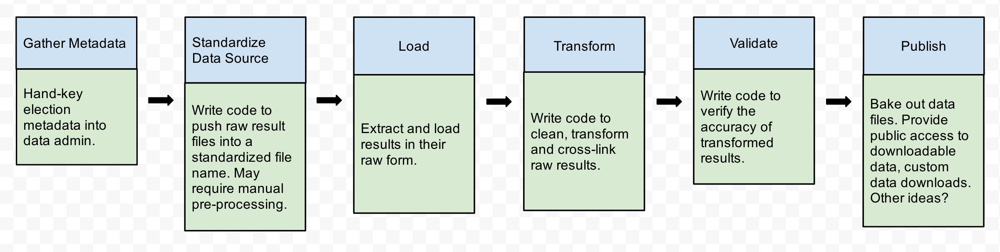

I don't have all the answers
But I run into this alot
My goal is to try to facilitate a discussion about common problems, tools and techniques
Most of my recent experience is working with a dataset of convictions in Cook County and with elections data from a number of states.
My kind of town
city_state
CCHICAGO, IL CDHICAGO CHHICAGO IL CHICAGO CH CHICAHO IL CHCAGO IL CHCAGO IL CHCAGO IL CHCAIGO IL CHCIACO IL CHCIAGO ...
xc
At some time in the data processing before this got to us, the CSV got messed up and these two fields were merged together.
Multiple values in one column
statute
720-5\8-4(19-1) 720-5\8-4(18-5)
Different references over time
statute chrgdesc
38-9-1-A(1) MURDER 38-9-1-A(1) MURDER 38-9-1-A(2) MURDER 720-5/9-1(a)(1) MURDER/INTENT TO KILL/INJURE
Encoded values
minsent
5 90 24000 24000 24000 10 300000 14
The columns for minimum and maximum sentences were encoded as 8 digit values. The leftmost 3 digits were years, the middle two were months, and the rightmost were days. There were special values for life and death sentences. The values weren't zero-padded.
Does anyone else have any stories about dirty data that they'd like to share?
In other projects I've run into issues with:
* Unexpected character encodings
* Non-structured data (PDFs converted to text)
* Duplicate rows
I prefer coding or command-line tools because that's what's familiar and fast to me. You can probably do a lot of these things using a spreadsheet application.
I prefer scripted or command line solutions becase:
* It's easier to replay your work, make your changes explicit, share work with others
* I've had problems with spreadsheet applications on larger datasets (~80)
With OpenElections we were able to find errors in published results data by comparing values between different reporting levels.
Open your data in a spreadsheet and visually inspect it.
Sorting alphabetically can help you find unexpected values.
Quick data stats
csvstat -c statute data/Criminal_Convictions_ALLCOOK_05-09.csv
14. statute
<type 'unicode'>
Nulls: True
Unique values: 1616
5 most frequent values:
720-570/402(c):29290
720-5/19-1(a):14697
720-5/16A-3(a):13613
720-570/401(c)(2):13415
720-570/401(d)(i):10959
Max length: 27
Row count: 321590
If data in one column is dirty, you might be able to determine the correct value from the others.
Avoid unneccesary cleaning. For example: the geocoder I used worked well with just street address and zip code. The zip code field was pretty clean even though city and states were missing or mangled.
Data pipelines

As you load or inspect your data, you may notice dirty values. While you could fix some values at different points in the process, it's best to do one thing at a time with your data.
You should document your changes and assumptions. At the very least, use a paper notepad or text file. At best, write scripts. For in-between, I've found IPython Notebooks to be a useful tool.
Example from OpenElections
openelex.us.md.transform
class RemoveBaltimoreCityComptroller(BaseTransform):
"""
Remove Baltimore City comptroller results.
Maryland election results use the string "Comptroller" for both the
state comptroller and the Baltimore City Comptroller. We're only
interested in the state comptroller.
"""
name = 'remove_baltimore_city_comptroller'
def __call__(self):
election_id = 'md-2004-11-02-general'
office = Office.objects.get(state='MD', name='Comptroller')
Contest.objects.filter(election_id=election_id, office=office).delete()
Candidate.objects.filter(election_id=election_id,
contest_slug='comptroller').delete()
Result.objects.filter(election_id=election_id,
contest_slug='comptroller').delete()
Example from cook-convictions-data
convictions_data.models
def _load_field_minsent(self, val):
self.minsent_years, self.minsent_months, self.minsent_days, self.minsent_life, self.minsent_death = self._parse_sentence(val)
return self